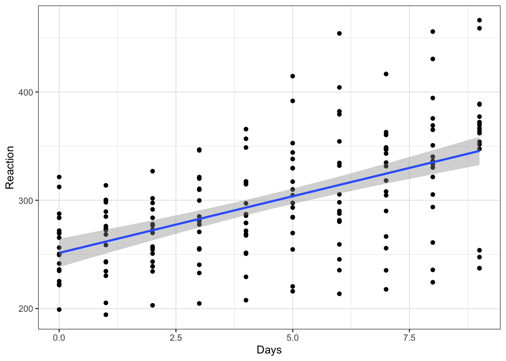
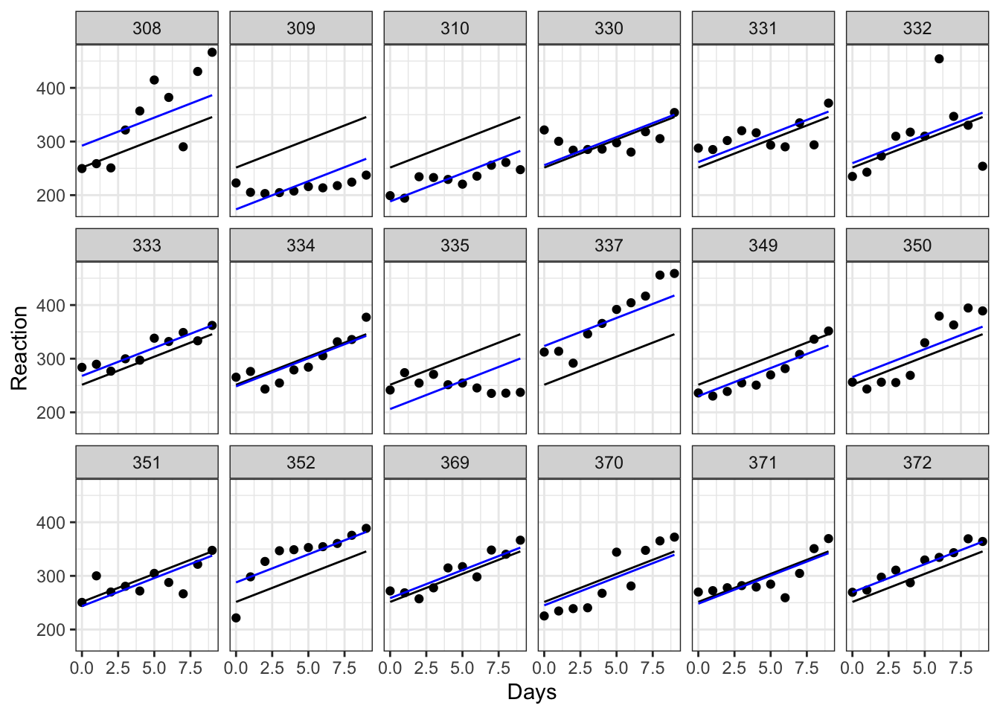
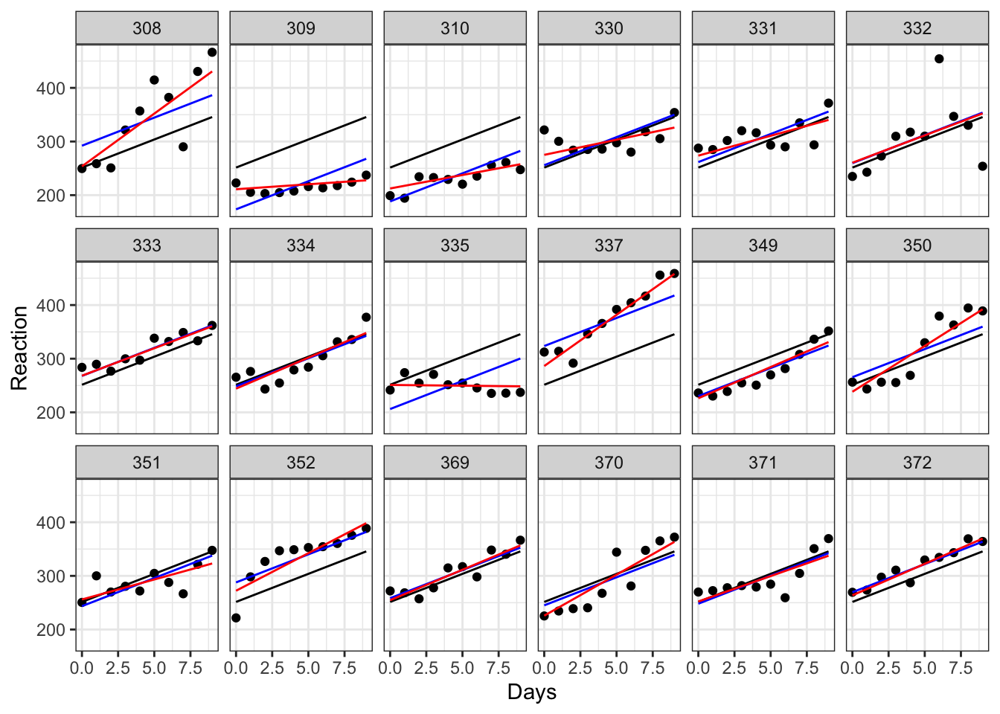
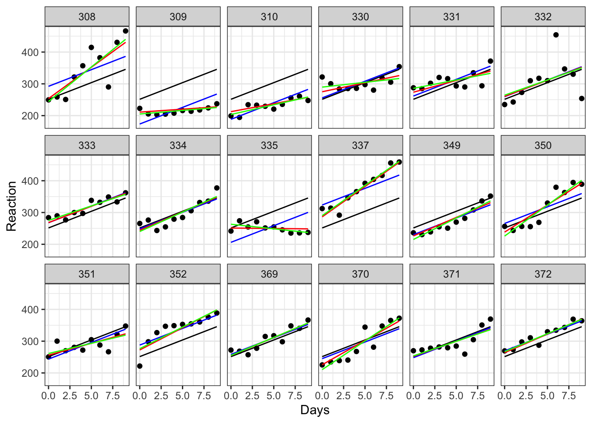
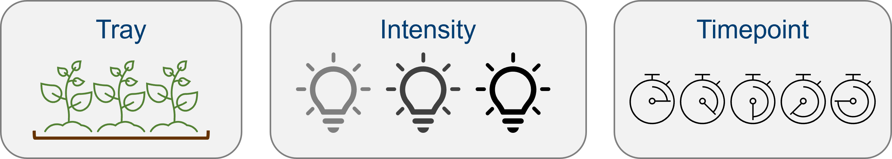
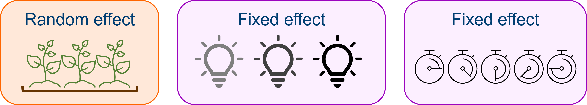
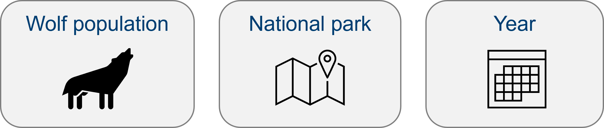
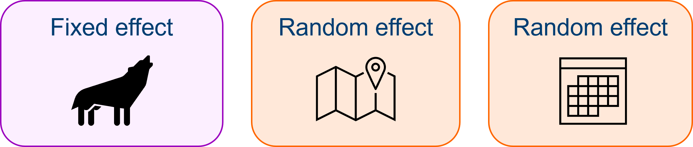
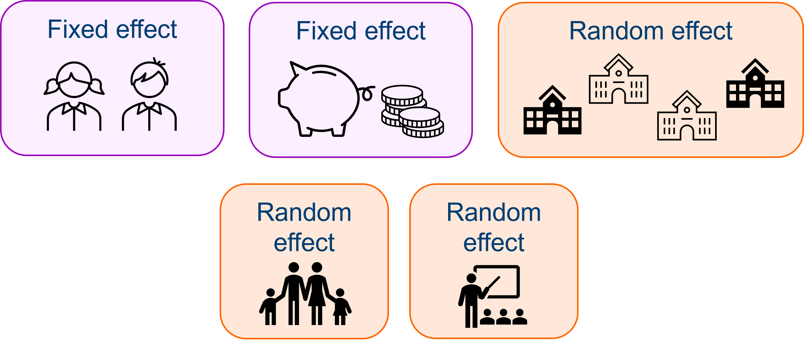

# you'll need this for plotting
library(tidyverse)
# install and load lme4 for fitting mixed effects models
install.packages("lme4")
library(lme4)27 Mixed effects models
Mixed effects models are particularly useful in biological and clinical sciences, where we commonly have innate clusters or groups within our datasets. This is because mixed effects models contain random effects in addition to fixed effects (hence the name, “mixed”).
Rather than incorrectly assuming independence between observations, random effects allow us to take into account the natural clusters or structures within datasets, without requiring us to calculate separate coefficients for each group. In other words, this solves the problem of pseudoreplication, without sacrificing as much statistical power.
Getting your head around the difference between a fixed effect and a random effect can be tricky, but the good news is that once you’ve got that broader understanding, actually fitting a mixed effects model is very easy.
27.1 Libraries and functions
Click to expand
We’ll be using the lme4 package in R, which is by far the most common and best choice of package for this type of model. (It’s an update of the older package nlme, which you might also see people using.) The syntax is nice and simple and extends what we’ve been doing so far with the lm() function in (hopefully!) a very intuitive way. The package also contains functions for fitting non-linear mixed effects and generalised mixed effects models - though we won’t be focusing on those here, it’s nice to know that the package can handle them in case you ever choose to explore them in future!
For Python users, the pymer4 package in Python allows you to “borrow” most of the functionality of R’s lme4, though it still has many bugs that make it difficult to run on any system except Linux. There is also some functionality for fitting mixed models using statsmodels in Python. We won’t be using those packages here, but you may wish to explore them if you are a die-hard Python user!
27.1.1 Libraries
27.2 What is a random effect?
There are a few things that characterise a random effect:
- All random effects are categorical variables or factors
- They create clusters or groups within your dataset (i.e., non-independence)
- The levels/groups of that factor have been chosen “at random” from a larger set of possible levels/groups - this is called exchangeability
- Usually, we are not interested in the random effect as a predictor; instead, we are trying to account for it in our analysis
- We expect to have 5 or more distinct levels/groups to be able to treat a variable as a random effect
27.3 The sleepstudy data
As a worked example, we’re going to use the internal sleepstudy dataset from the lme4 package in R (this dataset is also provided as a .csv file, if you’d prefer to read it in or are using Python). This is a simple dataset taken from a real study that investigated the effects of sleep deprivation on reaction times in 18 subjects, and has just three variables: Reaction, reaction time in milliseconds; Days, number of days of sleep deprivation; and Subject, subject ID.
data("sleepstudy")
head(sleepstudy) Reaction Days Subject
1 249.5600 0 308
2 258.7047 1 308
3 250.8006 2 308
4 321.4398 3 308
5 356.8519 4 308
6 414.6901 5 308Have a look at the data more closely. You’ll notice that for each subject, we’ve got 10 measurements, one for each day of sleep deprivation. This repeated measurement means that our data are not independent of one another; for each subject in the study we would expect measurements of reaction times to be more similar to one another than they are to reaction times of another subject.
Let’s start by doing something that we know is wrong, and ignoring this dependence for now. We’ll begin by visualising the data with a simple scatterplot.
ggplot(sleepstudy, aes(x = Days, y = Reaction)) +
geom_point() +
geom_smooth(method = "lm")
This gives the overall impression that we might expect - reaction time does seem to slow as people become more sleep deprived.
But, as we’ve already pointed out, ignoring the fact that subjects’ own reaction times will be more similar to themselves than to another subject’s, we should make a point of accounting for this.
27.4 Adding a random effect
In this dataset, we want to treat Subject as a random effect, which means fitting a mixed effects model. Why Subject? There are two things at play here that make us what to treat this as a random effect:
Subjectis a grouping variable within our dataset, and is causing us problems with independence.- It’s not these specific 18 subjects that we’re interested in - they instead represent 18 random selections from a broader distribution/population of subjects that we could have tested. We would like to generalise our findings to this broader population.
To fit the model, we use a different function to what we’ve used so far, but the syntax looks very similar. The difference is the addition of a new term (1|Subject), which represents our random effect.
# construct a linear mixed effects model with Subject
# as a random effect
lme_sleep1 <- lmer(Reaction ~ Days + (1|Subject),
data = sleepstudy)# summarise the model
summary(lme_sleep1)Linear mixed model fit by REML ['lmerMod']
Formula: Reaction ~ Days + (1 | Subject)
Data: sleepstudy
REML criterion at convergence: 1786.5
Scaled residuals:
Min 1Q Median 3Q Max
-3.2257 -0.5529 0.0109 0.5188 4.2506
Random effects:
Groups Name Variance Std.Dev.
Subject (Intercept) 1378.2 37.12
Residual 960.5 30.99
Number of obs: 180, groups: Subject, 18
Fixed effects:
Estimate Std. Error t value
(Intercept) 251.4051 9.7467 25.79
Days 10.4673 0.8042 13.02
Correlation of Fixed Effects:
(Intr)
Days -0.371Okay. The syntax might have looked similar, but the output does not.
Mixed effects models are much easier to get your head around them if you visualise - so let’s give that a go.
# create a linear model - we'll use this in our graph
lm_sleep <- lm(Reaction ~ Days,
data = sleepstudy)
# set up our basic plot
ggplot(sleepstudy, aes(x = Days, y = Reaction)) +
# create separate plots for each subject in the sample
# and add the data points
facet_wrap(facets = vars(Subject), nrow = 3) +
geom_point() +
# this adds the line of best fit for the whole sample
# (without the random effect), using coefficients
# from our simple linear model object
geom_line(data = cbind(sleepstudy, pred = predict(lm_sleep)),
aes(y = pred)) +
# and finally, this will add different lines of best fit
# for each subject as calculated in our mixed model object
geom_line(data = cbind(sleepstudy, pred = predict(lme_sleep1)),
aes(y = pred), colour = "blue")
Each plot represents a different subject’s data. On each plot, we’ve added the following:
- in black we have the same overall line of best fit from our original (incorrect) linear model.
- in blue are the individual lines of best fit for each subject. These lines move up and down the plot relative to the global line of best fit. This reflects the fact that, though all subjects are declining as they become more sleep deprived, some of them started with slower baseline reaction times, with different y-intercepts to match. Subject 310, for instance, seems to have pretty good reflexes relative to everyone else, while subject 337 isn’t quite as quick on the trigger.
The eagle-eyed among you, though, might have spotted that the gradient of each of these blue lines is still the same as the overall line of best fit. This is because we’ve added a random intercept in our model, but have kept the same slope. This reflects an underlying assumption that the relationship between sleep deprivation and reaction time is the same - i.e. that people get worse at the same rate - even if their starting baselines differ.
We might not think that this assumption is a good one, however. And that’s where random slopes come in.
27.5 Adding random slopes and random intercepts
To add a random slope as well as a random intercept, we need to alter the syntax slightly for our random effect. Now, instead of (1|Subject), we’ll instead use (1 + Days|Subject). This allows the relationship between Days and Reaction to vary between subjects.
Let’s fit that new model and summarise it.
lme_sleep2 <- lmer(Reaction ~ Days + (1 + Days|Subject),
data = sleepstudy)
summary(lme_sleep2)Linear mixed model fit by REML ['lmerMod']
Formula: Reaction ~ Days + (1 + Days | Subject)
Data: sleepstudy
REML criterion at convergence: 1743.6
Scaled residuals:
Min 1Q Median 3Q Max
-3.9536 -0.4634 0.0231 0.4634 5.1793
Random effects:
Groups Name Variance Std.Dev. Corr
Subject (Intercept) 612.10 24.741
Days 35.07 5.922 0.07
Residual 654.94 25.592
Number of obs: 180, groups: Subject, 18
Fixed effects:
Estimate Std. Error t value
(Intercept) 251.405 6.825 36.838
Days 10.467 1.546 6.771
Correlation of Fixed Effects:
(Intr)
Days -0.138We can go ahead and add our new lines (in red) to our earlier facet plot:
ggplot(sleepstudy, aes(x = Days, y = Reaction)) +
facet_wrap(facets = vars(Subject), nrow = 3) +
geom_point() +
# the global line of best fit
geom_line(data = cbind(sleepstudy, pred = predict(lm_sleep)),
aes(y = pred)) +
# our previous lines of best fit, with random intercepts
# but constant slope
geom_line(data = cbind(sleepstudy, pred = predict(lme_sleep1)),
aes(y = pred), colour = "blue") +
# our lines of best with random intercepts and random slopes
geom_line(data = cbind(sleepstudy, pred = predict(lme_sleep2)),
aes(y = pred), colour = "red") 
While for some of our subjects, the red, blue and black lines look quite similar, for others they diverge a fair amount. Subjects 309 and 335, for instance, are displaying a remarkably flat trend that suggests they’re not really suffering delays in reaction time from their sleep deprivation very much at all, while subject 308 definitely seems to struggle without their eight hours.
As an extra observation, let’s use geom_smooth to add the lines of best fit that we would see if we fitted each subject with their own individual regression:
ggplot(sleepstudy, aes(x = Days, y = Reaction)) +
facet_wrap(facets = vars(Subject), nrow = 3) +
geom_point() +
# the global line of best fit
geom_line(data = cbind(sleepstudy, pred = predict(lm_sleep)),
aes(y = pred)) +
# random intercepts only
geom_line(data = cbind(sleepstudy, pred = predict(lme_sleep1)),
aes(y = pred), colour = "blue") +
# random intercepts and random slopes
geom_line(data = cbind(sleepstudy, pred = predict(lme_sleep2)),
aes(y = pred), colour = "red") +
# individual regression lines for each individual
geom_smooth(method = "lm", se = FALSE,
colour = "green", linewidth = 0.5)
Here, the black line (which is the same on every plot) represents a global line of best fit - this is what we would see using complete pooling.
The blue and red lines represent our mixed effects models - the difference between the two is whether we allowed the slope to vary randomly, as well as the random intercept. In both cases, we are using partial pooling.
The green line, meanwhile, represents what happens when we allow no pooling. In other words, we’ve fit individual regressions between Reaction and Days for each subject. Comparing this to the red lines allows us to see the phenomenon of “shrinkage”. The green lines are all slightly closer to the black line than the red line is; in other words, there’s some shrinkage towards the global line. (Subjects 330, 335 and 370 perhaps show this best.) It’s subtle, but it’s a nice demonstration of what happens when we share information between levels of a random effect.
27.6 Evaluating models and assessing significance
You may have noticed the lack of p-values in any of our model outputs, and my avoidance of discussing significance. There’s a very good reason for this: it’s a fair bit more complicated than for standard linear models.
One of the main reasons is that when you are using partial pooling, there is no way to precisely figure out how many degrees of freedom you have, like we can do for fixed effects. This matters, because you need to know the degrees of freedom in order to be able to calculate p-values from the test statistics - an F-value alone is meaningless without associated degrees of freedom!
This is why the authors of the lme4 package have deliberately excluded p-values from the model summaries, and also why we won’t go any further for this particular course - talking about model comparison and significance testing when we have random effects included is a topic that deserves a course all to itself.
But, if you’re really keen to know a bit more about significance…
So, I know I said we weren’t going to go any further on this topic, but for those who are really interested, I figured I might as well include a short summary here of some of the approaches that are taken for significance testing of mixed effects models and their parameters, as a starting point for further reading.
- Use approximations for the degrees of freedom, to yield estimated p-values. There is a companion package called
lmerTestthat allows for p-values to be calculated using two common approximations, the Satterthwaite and Kenward-Roger approximations. - Likelihood ratio tests. LRTs involve making comparisons between models, to determine whether or not a particular parameter should be included. In other words, if you compare the model with versus without the parameter, you can see how that changes the fit; this is typically used for random effects, but sometimes for fixed effects as well. When using LRTs, however, you sometimes have to refit the model using maximum likelihood estimation instead of restricted maximum likelihood estimation (
lme4uses the latter by default) so it’s not always straightforward. - Markov chain Monte Carlo (MCMC) sampling, to determine the probability distribution associated with model parameters without a requirement for degrees of freedom. Unfortunately this technique cannot be used when the model contains random slopes, and therefore is not used very often.
- Make z-to-t approximations. There are Wald t-values reported as standard in the
lme4outputs; by treating them instead as z-values, you can find associated p-values. This approach relies on the fact that the z and t distributions are identical when degrees of freedom are infinite (so if the degrees of freedom are large enough, i.e., you have a lot of data, the approximation is decent).
27.7 Exercises
27.7.1 Exercise 1 - Ferns
Level:
A plant scientist is investigating how light intensity affects the growth rate of young fern seedlings.
He cultivates 240 seedlings in total in the greenhouse, split across ten trays (24 seedlings in each). Each tray receives one of three different light intensities, which can be varied by changing the settings on purpose-built growlights.
The height of each seedling is then measured repeatedly at five different time points (days 1, 3, 5, 7 and 9).
What are our variables? What’s the relationship we’re interested in, and which of the variables (if any) should be treated as random effects?

Answer
There are four things here that vary: tray, light intensity, timepoint and height.
We’re interested in the relationship between growth rate and light intensity. This makes our first two predictor variables easier to decide about:

The variable tray is a random effect here. We are not interested in differences between these 10 particular trays that we’ve grouped our seedlings into, but we do need to recognise the non-independence created by these natural clusters - particularly because we’ve applied the “treatment” (changes in light intensity) to entire trays, rather than to individual seedlings.
In contrast, light intensity - though a categorical variable - is a fixed effect. We are specifically interested in comparing across the three light intensity levels, so we don’t want to share information between them; we want fixed estimates of the differences between the group means here.
Perhaps the trickiest variable to decide about is time. Sometimes, we will want to treat time as a random effect in mixed effects models. And we have enough timepoints to satisfy the requirement for 5+ levels in this dataset.
But in this instance, where we are looking at growth rate, we have a good reason to believe that time is an important predictor variable, that may have an interesting interaction with light intensity.
Further, our particular levels of time - the specific days that we have measured - are not necessarily exchangeable, nor do we necessarily want to share information between these levels.
In this case, then, time would probably be best treated as a fixed rather than random effect.
However, if we were not measuring a response variable that changes over time (like growth), that might change. If, for instance, we were investigating the relationship between light intensity and chlorophyll production in adult plants, then measuring across different time points would be a case of technical replication instead, and time would be best treated as a random effect. The research question is key in making this decision.
27.7.2 Exercise 2 - Wolves
Level:
An ecologist is conducting a study to demonstrate how the presence of wolves in US national parks predicts the likelihood of flooding. For six different national parks across the country that contain rivers, they record the estimated wolf population, and the average number of centimetres by which the major river in the park overflows its banks, for the last 10 years - for a total of 60 observations.
What’s the relationship of interest? Is our total n really 60?

Answer
Though we have 60 observations, it would of course be a case of pseudoreplication if we failed to understand the clustering within these data.
We have four things that vary: wolf population, flood depth, national park and year.
With flood depth as our response variable, we already know how to treat that. And by now, you’ve hopefully got the pattern that our continuous effect of interest wolf population will always have to be a fixed effect.

But there’s also year and national park to contend with, and here, we likely want to treat both as random effects.
We have measured across several national parks, and over a 10 year period, in order to give us a large enough dataset for sufficient statistical power - these are technical replicates. But from a theoretical standpoint, the exact years and the exact parks that we’ve measured from, probably aren’t that relevant. It’s fine if we share information across these different levels.
Of course, you might know more about ecology than me, and have a good reason to believe that the exact years do matter - that perhaps something fundamental in the relationship between flood depth ~ wolf population really does vary with year in a meaningful way. But given that our research question does not focus on change over time, both year and national park would be best treated as random effects given the information we currently have.
27.7.3 Exercise 3 - Primary schools
Level:
An education researcher is interested in the impact of socio-economic status (SES) and gender on students’ primary school achievement.
For twelve schools across the UK, she records the following variables for each child in their final year of school (age 11):
- Standardised academic test scores
- Whether the child is male or female
- Standardised SES score, based on parental income, occupation and education
The response variable in this example is the standardised academic test scores, and we have two predictors: gender and SES score. Note that we have also tested these variables across three schools.
Which of these predictors should be treated as fixed versus random effects? Are there any other “hidden” grouping variables that we should consider, based on the description of the experiment?
Answer
We care about the effects of gender and SES score. We might also be interested in testing for the interaction between them, like so: academic test scores ~ SES + gender + SES:gender.
This helps us to determine straight away that both gender and SES score are fixed effects - we’re interested in them directly. Supporting this is the fact that we have restricted gender here to a categorical variable with only two levels, while SES score is continuous - neither of these could be treated as random effects.
However, school should be treated as a random effect. We collected data from 12 different schools, but we are not particularly interested in differences between these specific schools. In fact we’d prefer to generalise our results to students across all UK primary schools, and so it makes sense to share information across the levels. But we can’t neglect school as a variable in this case, as it does create natural clusters in our dataset.

We also have two possible “hidden” random effects in this dataset, however.
The first is classroom. If the final year students are grouped into more than one class within each school, then they have been further “clustered”. Students from the same class share a teacher, and thus will be more similar to one another than to students in another class, even within the same school.
The classroom variable would in fact be “nested” inside the school variable - more on nested variables in later sections of this course.
Our other possible hidden variable is family. If siblings have been included in the study, they will share an identical SES score, because this has been derived from the parent(s) rather than the students themselves. Siblings are, in this context, technical replicates! One way to deal with this is to simply remove siblings from the study; or, if there are enough sibling pairs to warrant it, we could also treat family as a random effect.
27.8 Summary and additional resources
For our purposes this week, the main takeaway from this section is to be aware of what a random effect is, and how you might identify when a mixed effects model would be appropriate for your data.
These sorts of data are very common in the biological sciences, though, so there might be several of you who are thinking about trying to use a mixed effects model already. I really recommend this blog post for further reading - it’s one of my favourites for introducing mixed effects models. In addition to talking about random slopes and intercepts, it also touches on how to cope with nested and crossed factors.
Here is some more discussion that might be useful to you if you’re still wrapping your head around the fixed vs random distinction.
A final note on some terminology: when searching for information on mixed effects models, you may also wish to use the term “multilevel” model, or even “hierarchical” model. The name “mixed model” refers specifically to the fact that there are both fixed and random effects within the same model; but you’ll also see the same sort of model referred to as “multilevel/hierarchical”, which references the fact that there are grouping variables that give the dataset a structure with different levels in it.
Key points
- We would fit a random effect if we have a categorical variable, with 5+ levels, that represent non-independent “clusters” or “groups” within the data
- Random effects are estimated by sharing information across levels/groups, which are typically chosen “at random” from a larger set of exchangeable levels
- A model with both fixed and random effects is referred to as a mixed effects model
- These models can be fitted in the
lme4package in R, using specialised syntax for random effects - For random intercepts, we use
(1|B), while random intercepts with random slopes can be fitted using(1 + A|B) - Random effects are fitted using partial pooling, which results in the phenomenon of “shrinkage”